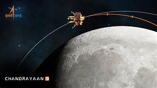

Isro's Chandrayana Mission
About Space Achivments
India has made remarkable progress in space exploration, thanks to the efforts of the Indian Space Research Organisation (ISRO).
Since its inception in 1969, ISRO has achieved significant milestones, making India a key player in global space research. One of its earliest achievements was the launch of Aryabhata in 1975, marking India's entry into space.
This was followed by the Rohini Satellite Series, which demonstrated India's capability to develop and launch satellites. In 1984, India sent its first astronaut, Rakesh Sharma, to space aboard the Soviet spacecraft Soyuz T-11, making history with his famous words, "Saare Jahan Se Achha."
ISRO’s space missions gained global attention with the Chandrayaan-1 mission in 2008, which confirmed the presence of water molecules on the Moon. This discovery was a breakthrough in lunar research.
The Mangalyaan (Mars Orbiter Mission) in 2013 further strengthened India's reputation in space exploration, as ISRO became the first agency to reach Mars on its first attempt and at a low cost. The success of Chandrayaan-2 in 2019, despite the lander facing challenges,
demonstrated India's advanced space technology.However, the biggest achievement came in 2023, when Chandrayaan-3 successfully landed on the Moon's south pole, making India the first country to achieve this feat.
Isro's Chandrayana Mission
About Isro's Chandarayana Mission
ISRO achieved a major milestone with Chandrayaan-3, launched on July 14, 2023. Unlike its predecessor, this mission focused solely on a lander-rover combination, eliminating an orbiter.
On August 23, 2023, the Vikram lander successfully touched down on the Moon’s south pole, making India the first country to achieve this feat.
The Pragyan rover then explored the region, analyzing soil, minerals, and temperature variations. This historic success reinforced India’s reputation as a global leader in space exploration.
Isro's Mangalayana Mission
About Isro's Mangalayana Mission
The Mars Orbiter Mission (Mangalyaan), launched by the Indian Space Research Organisation (ISRO) on November 5, 2013, was India's first interplanetary mission and a landmark achievement in space exploration.
The spacecraft was designed to study Mars' surface, atmosphere, and mineral composition while testing advanced space technology. After a journey of nearly 10 months, Mangalyaan successfully entered Mars' orbit on September 24, 2014,
making India the first country to reach Mars on its first attempt and the fourth space agency in the world to do so after NASA, the Soviet Union, and ESA.
Isro's Adithya-L1 Mission
About Isro's Adithya-L1 Mission
Aditya-L1 is designed to orbit around the Lagrange Point 1 (L1), located approximately 1.5 million kilometers from Earth, where the gravitational forces of the Earth and the Sun balance each other. This unique positioning allows the spacecraft to continuously observe the Sun without being affected by Earth’s eclipses or atmospheric disturbances.
The spacecraft carries seven scientific instruments to study the solar corona, the Sun’s outermost layer, as well as its magnetic field, solar winds, and energetic particles.